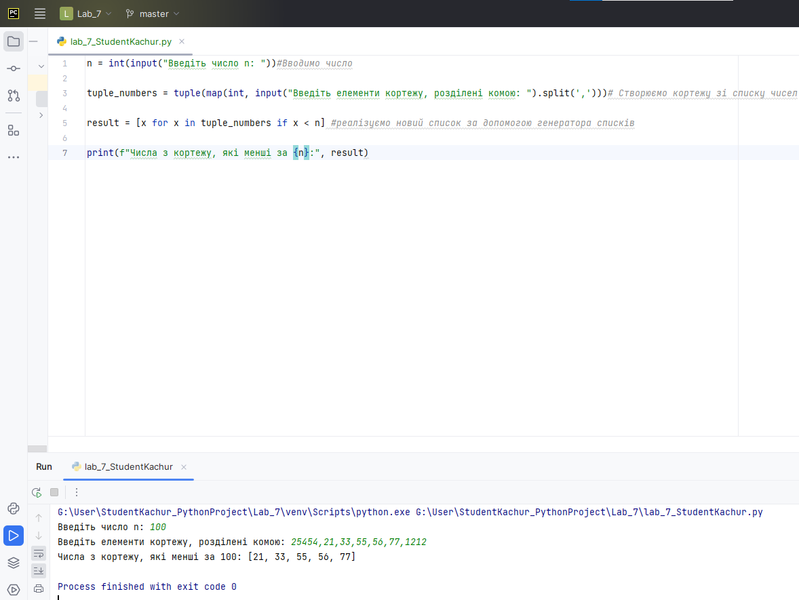
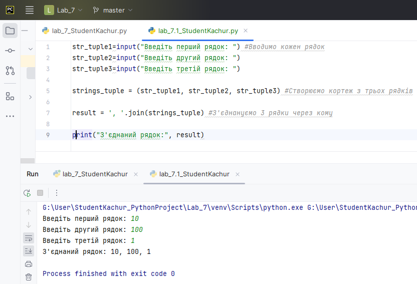
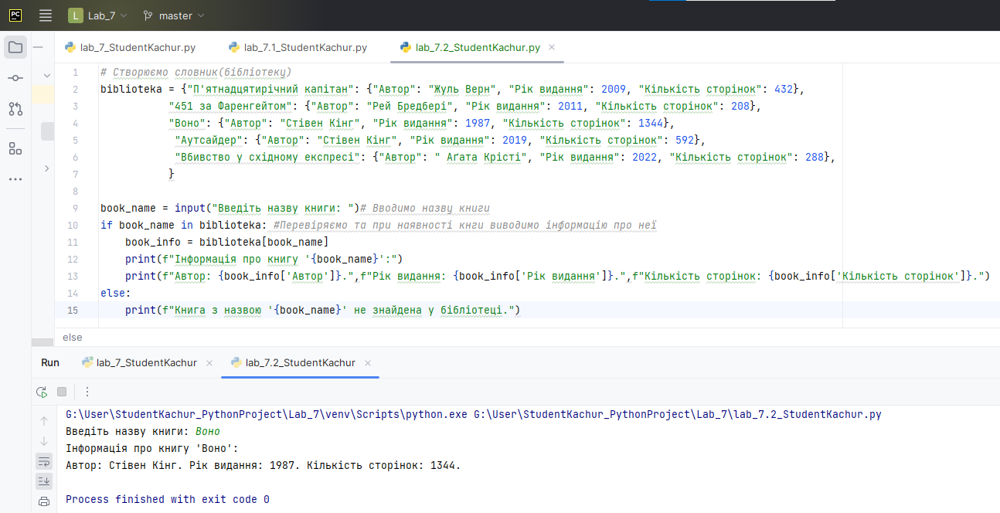
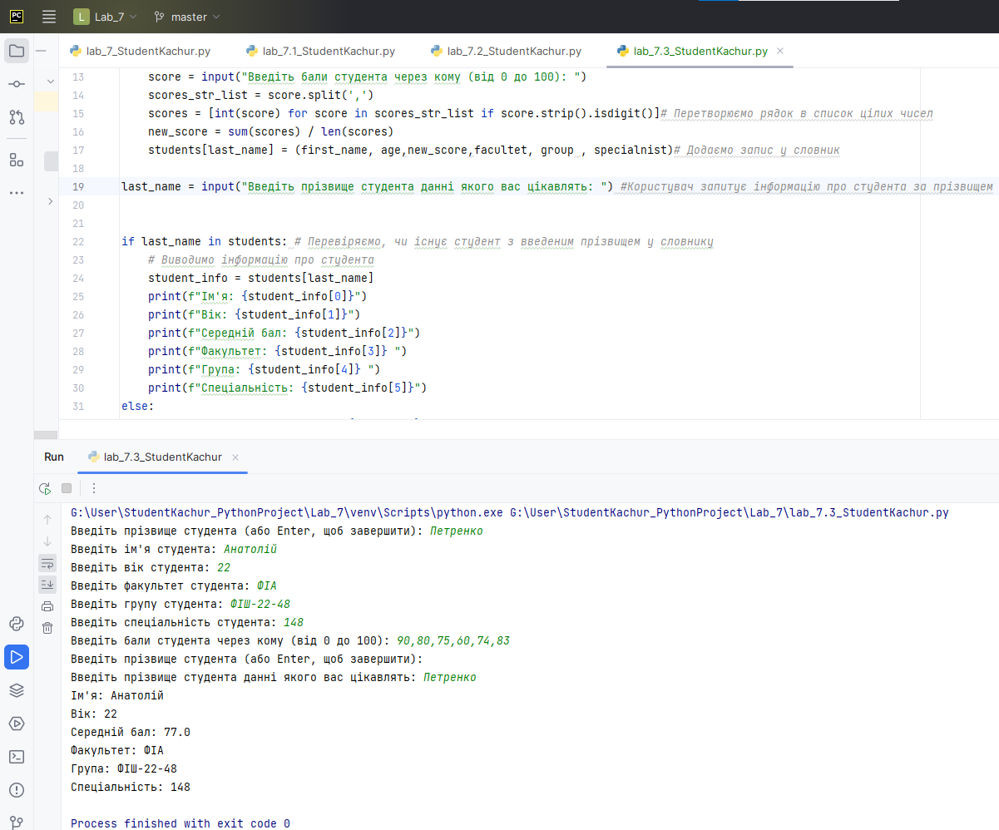
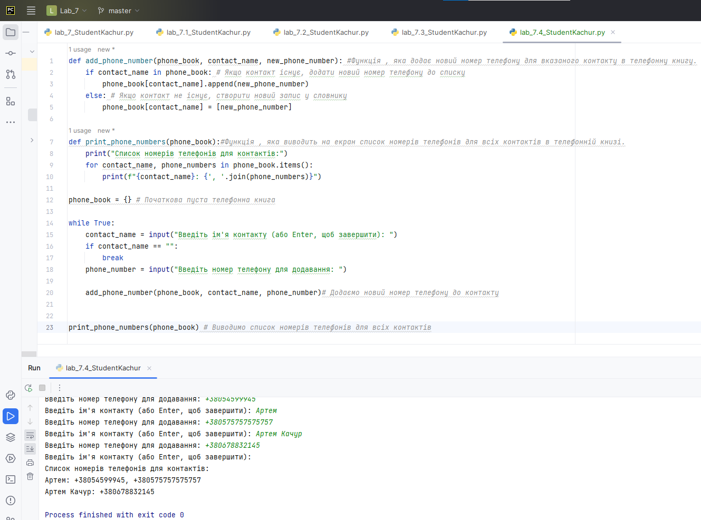

Code
# results = (80, 75, 90)
average_score = sum(results) / len(results)
max_score = max(results)
print(f"Середній бал: {average_score}")
print(f"Максимальний бал: {max_score}")Середній бал: 81.66666666666667
Максимальний бал: 90Мета: навчитися працювати зі структурами даних Кортеж та Словник. Навчитись обробляти основні типи винятків
Попередньо потрібно опрацювати лекцію 7.
У лабораторній роботі використано матеріали python institute.
tuple).dict).Створіть кортеж, який містить інформацію про результати іспитів з трьох предметів для студента (наприклад, математика, фізика та хімія). Виведіть на екран середній бал та максимальний бал.
# results = (80, 75, 90)
average_score = sum(results) / len(results)
max_score = max(results)
print(f"Середній бал: {average_score}")
print(f"Максимальний бал: {max_score}")Середній бал: 81.66666666666667
Максимальний бал: 90У цьому коді ми створюємо кортеж results, який містить оцінки студента з трьох предметів. Потім ми обчислюємо середній бал, використовуючи вбудовані функції sum та len, та максимальний бал, використовуючи вбудовану функцію max. Нарешті, ми виводимо ці значення на екран за допомогою функції print. Водночас ми продемонстрували один з варіантів форматованого виводу.
Створіть програму, яка буде обчислювати площу трикутника за трьома сторонами, які користувач введе з клавіатури. Збережіть введені користувачем значення за допомогою кортежів та виведіть їх на екран.
a = float(input("Введіть довжину першої сторони трикутника: "))
b = float(input("Введіть довжину другої сторони трикутника: "))
c = float(input("Введіть довжину третьої сторони трикутника: "))
# обчислюємо півпериметр
p = (a + b + c) / 2
# обчислюємо площу трикутника за формулою Герона
area = (p * (p - a) * (p - b) * (p - c)) ** 0.5
# зберігаємо введені користувачем значення у кортеж
triangle_sides = (a, b, c)
# виводимо на екран введені користувачем значення та площу трикутника
print(f"Довжина сторін трикутника: {triangle_sides}")
print(f"Площа трикутника: {area}")Введіть довжину першої сторони трикутника: 1
Введіть довжину другої сторони трикутника: 2
Введіть довжину третьої сторони трикутника: 3Довжина сторін трикутника: (1.0, 2.0, 3.0)
Площа трикутника: 0.0У цьому прикладі ми використовуємо кортеж triangle_sides, щоб зберегти довжини трьох сторін трикутника, які введені користувачем з клавіатури.
Напишіть програму, яка змінює порядок елементів у кортежі. Користувач повинен ввести кортеж, а програма повинна вивести його елементи у зворотному порядку.
t = tuple(input("Введіть елементи кортежу, розділені комою: ").split(','))
# змінюємо порядок елементів у кортежі
reversed_t = t[::-1]
# виводимо зворотний порядок елементів на екран
print(f"Зворотний порядок елементів кортежу: {reversed_t}")Введіть елементи кортежу, розділені комою: 1, 2, 3, 4, 5Зворотний порядок елементів кортежу: (' 5', ' 4', ' 3', ' 2', '1')У цьому прикладі ми використовуємо оператор зрізу [::], щоб змінити порядок елементів у кортежі t на зворотний порядок. Потім ми виводимо на екран зворотний порядок елементів у новому кортежі reversed_t.
Наприклад, якщо користувач введе "1,2,3,4,5", програма виведе на екран: “Зворотний порядок елементів кортежу: ('5', '4', '3', '2', '1').
Напишіть програму, яка створює кортеж зі списку чисел, а потім виводить на екран всі числа, які менші за задане число n. Умова: користувач вводить число n, і щоб створити новий список result, який містить всі числа з кортежу, які менші за n, реалізувати за допомогою генератора списків.
n = int(input("Введіть число n: "))#Вводимо число
tuple_numbers = tuple(map(int, input("Введіть елементи кортежу, розділені комою: ").split(',')))# Створюємо кортежу зі списку чисел
result = [x for x in tuple_numbers if x < n] #реалізуємо новий список за допомогою генератора списків
print(f"Числа з кортежу, які менші за {n}:", result)Введіть число n: 10
Введіть елементи кортежу, розділені комою: 1,11,15,3,7,8,15,5,7,8Числа з кортежу, які менші за 10: [1, 3, 7, 8, 5, 7, 8]
Напишіть програму, яка створює кортеж з трьох елементів, які є рядками, та з’єднує їх в один рядок з комою як роздільником. Примітка: з’єднати рядки також можна за допомогою методу .joint()
str_tuple1=input("Введіть перший рядок: ") #Вводимо кожен рядок
str_tuple2=input("Введіть другий рядок: ")
str_tuple3=input("Введіть третій рядок: ")
strings_tuple = (str_tuple1, str_tuple2, str_tuple3) #Створюємо кортеж з трьох рядків
result = ', '.join(strings_tuple) #З'єднануємо 3 рядки через кому
print("З'єднаний рядок:", result)Введіть перший рядок: Привіт
Введіть другий рядок: як ти
Введіть третій рядок: що робиш?З'єднаний рядок: Привіт, як ти, що робиш?
Створіть словник, який містить інформацію про книги в бібліотеці. Ключами будуть назви книг, а значеннями - автори, рік видання та кількість сторінок. Виведіть на екран інформацію про книгу, введену користувачем.
# Створюємо словник(бібліотеку)
biblioteka = {"П'ятнадцятирічний капітан": {"Автор": "Жуль Верн", "Рік видання": 2009, "Кількість сторінок": 432},
"451 за Фаренгейтом": {"Автор": "Рей Бредбері", "Рік видання": 2011, "Кількість сторінок": 208},
"Воно": {"Автор": "Стівен Кінг", "Рік видання": 1987, "Кількість сторінок": 1344},
"Аутсайдер": {"Автор": "Стівен Кінг", "Рік видання": 2019, "Кількість сторінок": 592},
"Вбивство у cхідному експресі": {"Автор": " Аґата Крісті", "Рік видання": 2022, "Кількість сторінок": 288},
}
book_name = input("Введіть назву книги: ")# Вводимо назву книги
if book_name in biblioteka: #Перевіряємо та при наявності кнги виводимо інформацію про неї
book_info = biblioteka[book_name]
print(f"Інформація про книгу '{book_name}':")
print(f"Автор: {book_info['Автор']}.",f"Рік видання: {book_info['Рік видання']}.",f"Кількість сторінок: {book_info['Кількість сторінок']}.")
else:
print(f"Книга з назвою '{book_name}' не знайдена у бібліотеці.")Введіть назву книги: 451 за ФаренгейтомІнформація про книгу '451 за Фаренгейтом':
Автор: Рей Бредбері. Рік видання: 2011. Кількість сторінок: 208.
Написати програму, яка веде облік студентів групи, забезпечуючи можливість зберігати ім’я і прізвище студента та його оцінки, і виводить середній бал по предметах.
school_class = {}
while True:
name = input("Enter the student's name: ")
if name == '':
break
# score = int(input("Enter the student's score (0-10): "))
# if score not in range(0, 11):
# break
# if name in school_class:
# school_class[name] += (score,)
# else:
# school_class[name] = (score,)
# for name in sorted(school_class.keys()):
# adding = 0
# counter = 0
# for score in school_class[name]:
# adding += score
# counter += 1
# print(name, ":", adding / counter)Напишіть програму, яка створює словник, що містить інформацію про студентів, використовуючи вказані кортежі в якості значень. Кожен ключ – це прізвище студента. Виведіть на екран інформацію про студента, введеного користувачем.
students = {} # Початковий пустий словник
while True: #Створюємо нескінченний цикл для заповнення словника
last_name = input("Введіть прізвище студента (або Enter, щоб завершити): ")#Вводимо інформацію про студента
if last_name=="":
break
first_name = input("Введіть ім'я студента: ")#Вводимо інформацію про студента
age = int(input("Введіть вік студента: "))
facultet = input("Введіть факультет студента: ")
group = input("Введіть групу студента: ")
specialnist = input("Введіть спеціальність студента: ")
score = input("Введіть бали студента через кому (від 0 до 100): ")
scores_str_list = score.split(',')
scores = [int(score) for score in scores_str_list if score.strip().isdigit()]# Перетворюємо рядок в список цілих чисел
new_score = sum(scores) / len(scores)
students[last_name] = (first_name, age,new_score,facultet, group , specialnist)# Додаємо запис у словник
last_name = input("Введіть прізвище студента данні якого вас цікавлять: ") #Користувач запитує інформацію про студента за прізвищем
if last_name in students: # Перевіряємо, чи існує студент з введеним прізвищем у словнику
# Виводимо інформацію про студента
student_info = students[last_name]
print(f"Ім'я: {student_info[0]}")
print(f"Вік: {student_info[1]}")
print(f"Середній бал: {student_info[2]}")
print(f"Факультет: {student_info[3]} ")
print(f"Група: {student_info[4]} ")
print(f"Спеціальність: {student_info[5]}")
else:
print(f"Студента з прізвищем '{last_name}' не знайдено.")Введіть прізвище студента (або Enter, щоб завершити): Качур
Введіть ім'я студента: Артем
Введіть вік студента: 19
Введіть факультет студента: АІС
Введіть групу студента: АКІТ-21-2
Введіть спеціальність студента: 151
Введіть бали студента через кому (від 0 до 100): 100,95,90,92,94,84
Введіть прізвище студента (або Enter, щоб завершити):
Введіть прізвище студента данні яког вас цікавлять: КачурІм'я: Артем
Вік: 19
Середній бал: 92.5
Факультет: АІС
Група: АКІТ-21-2
Спеціальність: 151
Створіть словник, який містить інформацію про більше, ніж один номер телефону для кожного з контактів в телефонній книзі. Ключами будуть імена контактів, а значеннями - список їхніх номерів телефонів. Напишіть функцію, яка дозволяє додати новий номер телефону до списку номерів телефону певного контакту. Потім виведіть на екран список номерів телефонів для всіх контактів.
def add_phone_number(phone_book, contact_name, new_phone_number): #Функція , яка додає новий номер телефону для вказаного контакту в телефонну книгу.
if contact_name in phone_book: # Якщо контакт існує, додати новий номер телефону до списку
phone_book[contact_name].append(new_phone_number)
else: # Якщо контакт не існує, створити новий запис у словнику
phone_book[contact_name] = [new_phone_number]
def print_phone_numbers(phone_book):#Функція , яка виводить на екран список номерів телефонів для всіх контактів в телефонній книзі.
print("Список номерів телефонів для контактів:")
for contact_name, phone_numbers in phone_book.items():
print(f"{contact_name}: {', '.join(phone_numbers)}")
phone_book = {} # Початкова пуста телефонна книга
while True:
contact_name = input("Введіть ім'я контакту (або Enter, щоб завершити): ")
if contact_name == "":
break
phone_number = input("Введіть номер телефону для додавання: ")
add_phone_number(phone_book, contact_name, phone_number)# Додаємо новий номер телефону до контакту
print_phone_numbers(phone_book) # Виводимо список номерів телефонів для всіх контактівВведіть ім'я контакту (або Enter, щоб завершити): Артем Качур
Введіть номер телефону для додавання: +380688831048
Введіть ім'я контакту (або Enter, щоб завершити): Артем Качур
Введіть номер телефону для додавання: +380733087638
Введіть ім'я контакту (або Enter, щоб завершити): Анатолій
Введіть номер телефону для додавання: +380575756757
Введіть ім'я контакту (або Enter, щоб завершити): Григорій
Введіть номер телефону для додавання: +3805464664664
Введіть ім'я контакту (або Enter, щоб завершити): Анатолій
Введіть номер телефону для додавання: +380599495945
Введіть ім'я контакту (або Enter, щоб завершити): Анатолій
Введіть номер телефону для додавання: +4545454545454
Введіть ім'я контакту (або Enter, щоб завершити): Список номерів телефонів для контактів:
Артем Качур: +380688831048, +380733087638
Анатолій: +380575756757, +380599495945, +4545454545454
Григорій: +3805464664664
Виконати завдання 1-5 наведені вище у цьому зошиті.
Створити файл lab_7_StudentLastName.py з написаним кодом.
Закомітити файл у локальний репозиторій.
Відправити (“запушити”) поточну версію Git-проєкта у віддалений репозиторій на GitHub.
Звіт має складатися з файлу (за основу взяти цей Python-зошит) lab_7_StudentLastName.ipynb. (Можливі якісь додакові файли)
my_tuple = (1, 2, 3)
print(my_tuple[1:])(2, 3)
my_dict = {'a': 1, 'b': 2, 'c': 3}
print(my_dict.get('d', 4))4
my_tuple = (1, 2, 3)
my_tuple[0] = 4
print(my_tuple)Виняток
my_dict = {'a': 1, 'b': 2, 'c': 3}
my_dict.update({'d': 4})
print(my_dict){‘a’: 1, ‘b’: 2, ‘c’: 3, ‘d’: 4}